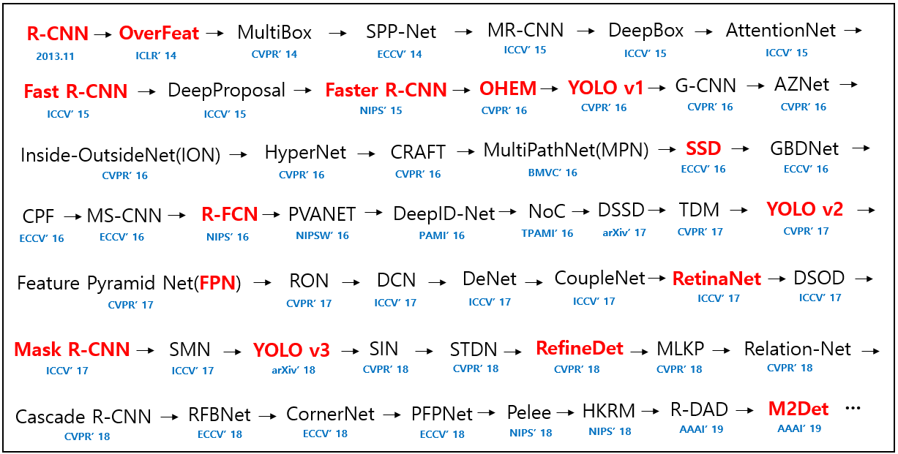
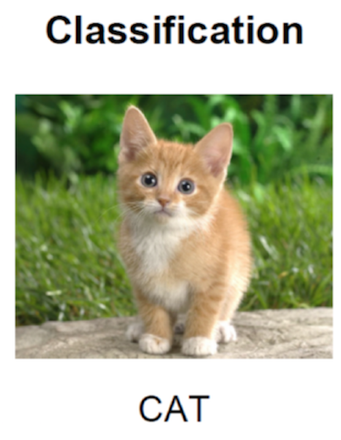

5.1 目标检测概述
学习目标
- 目标
- 了解目标检测算法分类
- 知道目标检测的常见指标IoU
- 了解目标定位的简单实现方式
应用
- 无
5.1.1 什么是目标检测
- 目标检测（Object Detection）的任务是找出图像中所有感兴趣的目标（物体），确定它们的类别和位置。
例子：确定某张给定图像中是否存在给定类别（比如人、车、自行车、狗和猫）的目标实例；如果存在，就返回每个目标实例的空间位置和覆盖范围。作为图像理解和计算机视觉的基石，目标检测是解决分割、场景理解、目标追踪、图像描述、事件检测和活动识别等更复杂更高层次的视觉任务的基础。
目标检测的应用场景
目标检测具有巨大的实用价值和应用前景。
应用领域包括人脸检测、行人检测、车辆检测、卫星图像中道路的检测、车载摄像机图像中的障碍物检测、医学影像在的病灶检测等。
应用场景包括长/视频领域、医学场景、安防领域、自动驾驶等等众多领域
行人车辆检测：

多人脸的检测：

目标检测的实用价值
这里我们举一些使用的场景
- 在视频中去进行检测明星人物，检测出某明星的视频只看他的视频。类似在爱奇艺中的只看他功能快速筛选仅有明星出现的片段。
5.1.2 目标检测算法介绍
下面这张图代表了目标检测算法的发展历史（基于深度学习），其中红色部分是影响较大的算法论文。需要大家着重了解的

算法分类
- 两步走的目标检测：先进行区域推荐，而后进行目标分类
包含一个用于区域提议的预处理步骤，使得整体流程是两级式的。代表：R-CNN、SPP-Net、Fast R-CNN、Faster R-CNN和R-FCN等
- 端到端的目标检测：直接在网络中提取特征来预测物体分类和位置
即无区域提议的框架，这是一种单独提出的方法，不会将检测提议分开，使得整个流程是单级式的。代表：OverFeat、YOLOv1、YOLOv2、YOLOv3、SSD和RetinaNet等

几种类别结构xmind形式如下：

算法效果对比
因为对比角度有很多，性能和准确度，性能方面不好比较，涉及到使用的CPU和GPU的区别。不同算法当时实验环境不一样。这里进行了准确度的比较
论文在常见数据集中的测试效果：
| Detector | VOC07 (mAP@IoU=0.5) | VOC12 (mAP@IoU=0.5) | COCO (mAP@IoU=0.5:0.95) | Published In |
|---|---|---|---|---|
| R-CNN | 58.5 | - | - | CVPR'14 |
| SPP-Net | 59.2 | - | - | ECCV'14 |
| MR-CNN | 78.2 (07+12) | 73.9 (07+12) | - | ICCV'15 |
| Fast R-CNN | 70.0 (07+12) | 68.4 (07++12) | 19.7 | ICCV'15 |
| Faster R-CNN | 73.2 (07+12) | 70.4 (07++12) | 21.9 | NIPS'15 |
| YOLO v1 | 66.4 (07+12) | 57.9 (07++12) | - | CVPR'16 |
| G-CNN | 66.8 | 66.4 (07+12) | - | CVPR'16 |
| AZNet | 70.4 | - | 22.3 | CVPR'16 |
| ION | 80.1 | 77.9 | 33.1 | CVPR'16 |
| HyperNet | 76.3 (07+12) | 71.4 (07++12) | - | CVPR'16 |
| OHEM | 78.9 (07+12) | 76.3 (07++12) | 22.4 | CVPR'16 |
| MPN | - | - | 33.2 | BMVC'16 |
| SSD | 76.8 (07+12) | 74.9 (07++12) | 31.2 | ECCV'16 |
| GBDNet | 77.2 (07+12) | - | 27.0 | ECCV'16 |
| CPF | 76.4 (07+12) | 72.6 (07++12) | - | ECCV'16 |
| R-FCN | 79.5 (07+12) | 77.6 (07++12) | 29.9 | NIPS'16 |
| DeepID-Net | 69.0 | - | - | PAMI'16 |
| NoC | 71.6 (07+12) | 68.8 (07+12) | 27.2 | TPAMI'16 |
| DSSD | 81.5 (07+12) | 80.0 (07++12) | 33.2 | arXiv'17 |
| TDM | - | - | 37.3 | CVPR'17 |
| FPN | - | - | 36.2 | CVPR'17 |
| YOLO v2 | 78.6 (07+12) | 73.4 (07++12) | - | CVPR'17 |
| RON | 77.6 (07+12) | 75.4 (07++12) | 27.4 | CVPR'17 |
| DeNet | 77.1 (07+12) | 73.9 (07++12) | 33.8 | ICCV'17 |
| CoupleNet | 82.7 (07+12) | 80.4 (07++12) | 34.4 | ICCV'17 |
| RetinaNet | - | - | 39.1 | ICCV'17 |
| DSOD | 77.7 (07+12) | 76.3 (07++12) | - | ICCV'17 |
| SMN | 70.0 | - | - | ICCV'17 |
| Light-Head R-CNN | - | - | 41.5 | arXiv'17 |
| YOLO v3 | - | - | 33.0 | arXiv'18 |
| SIN | 76.0 (07+12) | 73.1 (07++12) | 23.2 | CVPR'18 |
| STDN | 80.9 (07+12) | - | - | CVPR'18 |
| RefineDet | 83.8 (07+12) | 83.5 (07++12) | 41.8 | CVPR'18 |
| SNIP | - | - | 45.7 | CVPR'18 |
| Relation-Network | - | - | 32.5 | CVPR'18 |
| Cascade R-CNN | - | - | 42.8 | CVPR'18 |
| MLKP | 80.6 (07+12) | 77.2 (07++12) | 28.6 | CVPR'18 |
| Fitness-NMS | - | - | 41.8 | CVPR'18 |
| RFBNet | 82.2 (07+12) | - | - | ECCV'18 |
| CornerNet | - | - | 42.1 | ECCV'18 |
| PFPNet | 84.1 (07+12) | 83.7 (07++12) | 39.4 | ECCV'18 |
| Pelee | 70.9 (07+12) | - | - | NIPS'18 |
| HKRM | 78.8 (07+12) | - | 37.8 | NIPS'18 |
| M2Det | - | - | 44.2 | AAAI'19 |
| R-DAD | 81.2 (07++12) | 82.0 (07++12) | 43.1 | AAAI'19 |
5.1.2 目标检测的任务
分类的任务回顾
- 分类的损失与优化
在训练的时候需要计算每个样本的损失，那么CNN做分类的时候使用softmax函数计算结果，损失为交叉熵损失

- 常见CNN模型

对于目标检测来说不仅仅是分类这样简单的一个图片输出一个结果，而且还需要输出图片中目标的位置信息，所以从分类到检测，如下图标记了过程:
- 分类

- 目标检测
输出结果对比
- 分类：
- N个类别
- 输入：图片
- 输出：类别标签
- 评估指标：Accuracy

- 定位：
- N个类别
- 输入：图片
- 输出：物体的位置坐标
- 主要评估指标：IOU

其中我们得出来的(x,y,w,h)有一个专业的名词，叫做bounding box(bbox).
- 物体位置：
- x, y, w,h:x,y物体的中心点位置，以及中心点距离物体两边的长宽
- xmin, ymin, xmax, ymax：物体位置的左上角、右下角坐标
5.1.3 目标定位的简单实现思路
在分类的时候我们直接输出各个类别的概率，如果再加上定位的话，我们可以考虑在网络的最后输出加上位置信息。下面我们考虑图中只有一个物体的检测时候，我们可以有以下方法去进行训练我们的模型
5.1.3.1 回归位置
增加一个全连接层，即为FC1、FC2
FC1：作为类别的输出
FC2：作为这个物体位置数值的输出

假设有10个类别，输出[p1,p2,p3,...,p10]，然后输出这一个对象的四个位置信息[x,y,w,h]。同理知道要网络输出什么，如果衡量整个网络的损失
- 对于分类的概率，还是使用交叉熵损失
- 位置信息具体的数值，可使用MSE均方误差损失（L2损失）
如下图所示

5.1.3.2 两种Bounding box名称
在目标检测当中，对bbox主要由两种类别。
- Ground-truth bounding box：图片当中真实标记的框
- Predicted bounding box：预测的时候标记的框

一般在目标检测当中，我们预测的框有可能很多个，真实框GT也有很多个。
目标检测在很多领域都有应用需求，包括人脸检测，行人检测，车辆检测以及遥感影像中的重要地物检测等。
人脸检测
人脸检测是人脸识别应用中重要的一个环节，主要用于确定人脸在图像中的大小和位置，即解决“人脸在哪里”的问题，把真正的人脸区域从图像中裁剪出来，便于后续的人脸特征分析和识别。

行人检测
行人检测具有极其广泛的应用：智能辅助驾驶，智能监控，行人分析以及智能机器人等领域。此外，其在视频监控，人流量统计，自动驾驶中都有重要的地位。特征提取、形变处理、遮挡处理、分类是四个行人检测中的重要部分。

车辆检测
车辆检测在智能交通，视频监控，自动驾驶中有重要的地位。车流量统计，车辆违章的自动分析等都离不开它，在自动驾驶中，首先要解决的问题就是确定道路在哪里，周围有哪些车、人或障碍物。

此外，交通标志如交通灯、行驶规则标志的识别对于自动驾驶也非常重要，我们需要根据红绿灯状态，是否允许左右转、掉头等标志确定车辆的行为。同时，医学影像图像如MRI的肿瘤等病变部位检测和识别对于诊断的自动化，提供优质的治疗具有重要的意义。还有工业中材质表面的缺陷检测，硬刷电路板表面的缺陷检测等。
5.1.4 总结
- 掌握目标检测的算法分类
- 掌握分类，分类与定位，目标检测的区别
- 掌握分类与定位的简单方法、损失衡量